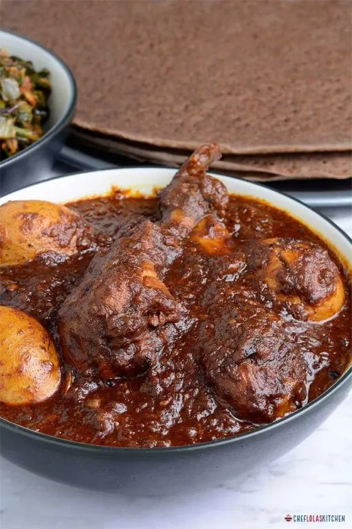
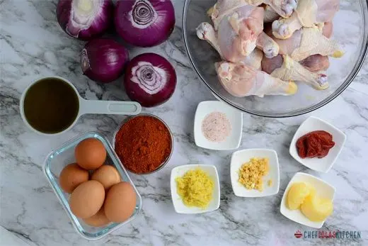

DORO WAT

DORO WaT
Doro wat (also spelled doro wot) is an Ethiopian chicken stew flavored with a spiced butter called niter kibbeh and berbere,
a spice blend that often includes fenugreek, hot chiles, paprika, cardamom, and coriander.
Toward the end of cooking, hard-boiled eggs are added to the stew. Doro wat is typically served with injera bread,
a flatbread made with teff, the staple grain of Ethiopia.
It's one of the most recognizable Ethiopian foods and is served in Ethiopian restaurants around the world.
Essential Doro Wat Ingredients

- 4 tablespoons clarified butter or ghee:
- 2 tablespoons minced fresh ginger
- 1 red onion, minced
- 4 garlic cloves, minced:
- 3 tablespoons berbere spice mixture
- 1 tablespoon tomato paste
- 4 cups chicken stock
- Kosher salt, to taste
- 4 boneless skinless chicken thighs, halved
- 1 tablespoon lemon juice
- 4 hard-boiled eggs
- Injera or cooked rice, to serve
Steps to make doro wat
- Melt the clarified in a large pot over medium-low heat.
- Add the ginger, onion, and garlic and sauté until softened, about 20 minutes.
- Add berbere and tomato paste and continue to sauté until darkened, about 10 minutes.
- Add chicken stock and season to taste with salt.
- Add chicken thighs and simmer, covered, until chicken is cooked through, about 45 minutes.
- Add chicken thighs and simmer, covered, until chicken is cooked through, about 45 minutes.
- Increase the heat to medium-high and reduce the sauce until very thick, about 15 minutes.
- Season the sauce to taste with lemon juice and salt.
- Return chicken pieces to the sauce, with hard-boiled eggs. Toss to coat.
- Serve hot with injera bread or rice.